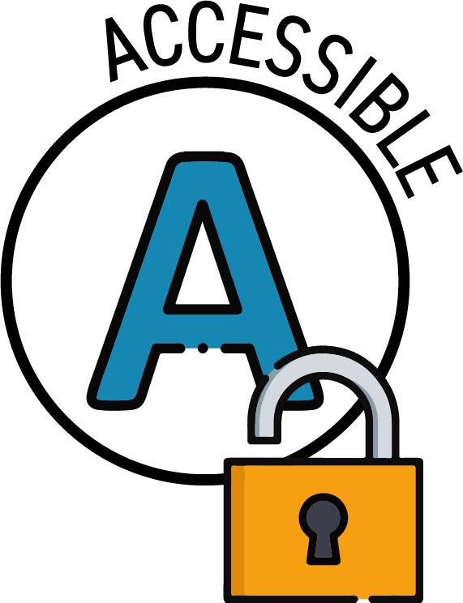
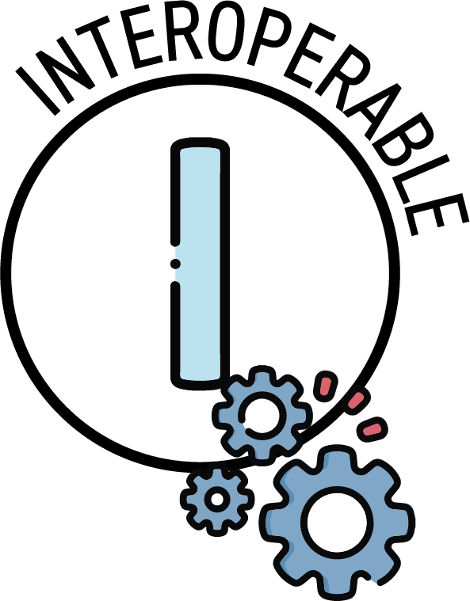
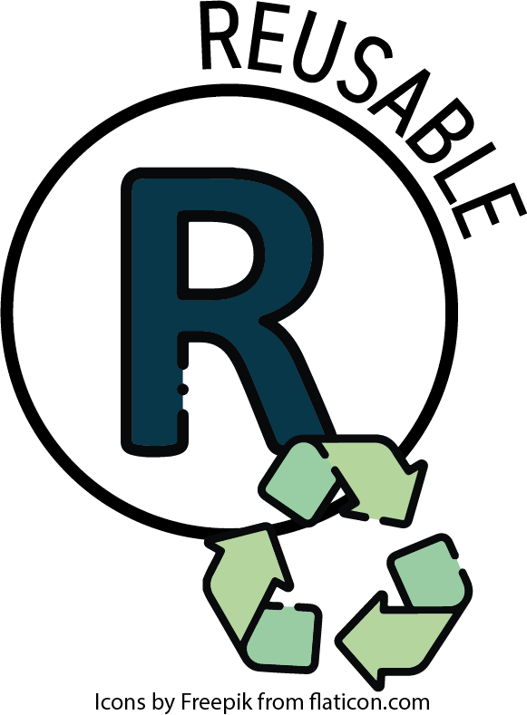

About what entities exist, how they relate, and how they're described —
before any of it gets implemented in a particular database.
A data model defines what the data is —
the things you track every day: proposals, awards, personnel, budgets.
Which system stores them, how they move between systems, and what reports they feed
are separate decisions.
Part 1 · What is a data model?
Three layers of abstraction
Conceptual
What things exist
People, projects, awards, organizations. Spoken in the language of the domain — no technical detail.
Logical
How they relate
Entities become tables, attributes become columns, relationships become foreign keys. Still database-agnostic.
Physical
How it's stored
Indexes, partitioning, vendor-specific types. Different for Postgres, SQL Server, Snowflake.
The UDM is a logical model — institutions handle the physical layer themselves.
But the conceptual and logical layers are where
we need your feedback:
What should a data model for research administration include?
How should it be structured to make the data easy to access and use?
Live poll · Poll 1 · Word cloud
What should a data model for research administration include?
Persistent identifiers (Award_ID, Personnel_ID) and searchable metadata.

Clear retrieval pathways with PII-flagged fields and governed permissions.

Shared vocabulary across institutions and systems via the schema specification.

Documented provenance, descriptions, synonyms, and usage context on every field.
FAIR source: Wilkinson, M. D., et al. (2016).
“The FAIR Guiding Principles for scientific data management and stewardship.”
Scientific Data, 3, 160018.
Graphic: Cloud-SPAN.
Part 2 · Why research admin needs one
What the UDM does not model
Data movement — how data gets from your source systems into the UDM is a separate technical job. The model just defines the destination.
Business processes — workflow, routing, approvals belong in process tools.
Application internals — UI state, sessions, ticketing system internals.
The test: "Is this something a research administrator would describe as 'our data'?"
If yes, it belongs. If it's infrastructure or workflow engines, it doesn't.
Part 3 · Tour of the UDM
Organized by domain
40Tables
10Domains
8Reference Views
1Source of Truth
Reference
Shared lookups
Organization, AllowedValues, BudgetCategory
Core
People & projects
Personnel, ContactDetails, Project
Pre-Award
Opportunities & proposals
RFA, Proposal, ProposalBudget, ChecklistItem
Submission
Packaging & transmission
SubmissionPackage, Attempt, Event
Post-Award
Funded work
Award, Modification, Terms, Subaward, Deliverable
Financial
Accounting & transactions
Fund, Account, FinanceCode, Transaction, Invoice
Effort
Roles & certification
ProjectRole, Effort
Compliance
Regulatory tracking
ComplianceRequirement, ConflictOfInterest
System
Audit & documents
Document, ActivityLog
Live poll · Poll 4 · Open text
Describe one thing your office tracks that you can't immediately place into one of our UDM domains.
The research effort. May span multiple proposals and multiple awards. Supports parent/child hierarchies.
Proposal
A formal request for funding. Links a Project to an RFA and to three Organization roles.
Award
Funded grants and contracts. The center of post-award management — budget periods, modifications, deliverables.
Pattern: Project > Proposal > Award — one project can yield many proposals, each proposal at most one award.
Part 3 · Tour of the UDM
An exemplar, by design
The UDM is not a product. It is an exemplar — a starting point an
institution can adopt as-is or adapt to local realities.
Designed for adoption
Open-source, modular, FAIR-aligned.
Built iteratively with partner institutions — not imposed by a vendor.
Ships with documentation: data dictionaries, ER diagrams, synonyms, PII flags.
Built for the institutions that need it most
Emerging research institutions, minority-serving institutions, and primarily undergraduate institutions
face the worst data silos and the thinnest infrastructure budgets. The UDM is designed to bridge the
Innovation Valley of Death — turning a shared standard into practical leverage
where leverage is hardest to come by.
Activity 1.1 of the AI4RA framework (NSF-funded). The rest of this tour shows what becomes possible when an institution shapes its data to the UDM.
Part 3 · Tour of the UDM
Eight questions the UDM makes easy
When the data is UDM-shaped, the same SQL works at any institution that maps to the schema.
These eight illustrate what becomes trivial once the schema is shared.
Post-Award
vw_Active_Awards
“What is currently funded?”
vw_Expiring_Awards
“What runs out in 90 days?”
vw_Award_Financial_Summary
“Where does this award stand?”
Financial
vw_Budget_Comparison
“How is spend tracking against budget?”
Effort & Project
vw_Active_Personnel_Roles
“Who is working on what right now?”
vw_Overdue_Deliverables
“What is late?”
Core
vw_All_ContactDetails
“How do I reach this person?”
Compliance
vw_ComplianceRequirement_Status
“What approvals are still pending?”
Each view is a JOIN across a small set of UDM tables. The schema is the contract; these views are proof. Adopt as-is, adapt, or build your own.
Part 3 · Tour of the UDM
Your dashboards are now portable
Without the UDM, every institution rebuilds the same answers against their own data shapes.
With the UDM, the work ships.
Without the UDM
Idaho writes effort certification SQL against Banner. Washington rebuilds it against PeopleSoft. Colorado rebuilds it against their custom ERA.
Three institutions. Three solutions. Zero shared work.
→
With the UDM
Idaho writes the SQL against UDM Effort + Personnel + Project. Washington and Colorado run the same SQL, unchanged.
One solution. Thirty institutions reuse it.
The schema is a lingua franca for research administration. Compliance dashboards, budget templates,
effort queries, and training materials become FAIR community deliverables — not institutional re-inventions.
Part 3 · Tour of the UDM
Your queries explain themselves
Beyond portability, UDM-shaped data is transparent. Every column says what it means.
Every relationship is documented. The ontology does the explaining so the query doesn't have to.
Cryptic source schema
SELECT P.PER_FNM, P.PER_LNM,
A.AW_TIT, A.FOA_AMT
FROM PER_MST P
JOIN AWA_PER AP
ON P.PER_PK = AP.AP_PER
...
“What does FOA_AMT mean? How is it different from EST_AMT?”
→
UDM-shaped query
SELECT p.Full_Name,
a.Award_Title,
a.Funds_Obligated_Amount
FROM Personnel p
JOIN Award a USING (Award_ID)
...
Reads like English. A research admin without SQL training can read it.
Plain-language names · every column carries a description · synonyms document source-system aliases
· PII flags surface what's sensitive · FK relationships are explicit.
Part 3 · Tour of the UDM
Predictable names, predictable joins
The conventions are deliberately mechanical —
once you know the rules, you can guess the schema before reading it.
Element
Convention
Examples
Tables
PascalCase, singular
Award, ProjectRole
Columns
Capitalized Snake_case
Award_Number, Start_Date
Primary keys
TableName_ID
Award_ID, Personnel_ID
Booleans
Is_ prefix
Is_Active, Is_Primary
Status
_Status suffix
Award_Status, Invoice_Status
Money
_Amount suffix
Transaction_Amount
Part 3 · Tour of the UDM
Foreign keys are named by role
When a table references another, the FK describes what the relationship is —
not just where it points.
-- Proposal has three Organization references:Sponsor_Organization_ID the funder
Submitting_Organization_ID the unit preparing it
Administering_Organization_ID the unit managing finances
A generic Organization_ID would lose the meaning that joins are built on.
Part 3 · Tour of the UDM
AllowedValues vs CHECK constraints
Two ways to control enumerated values. Which one depends on whether the value is institution-specific or a universal standard.
AllowedValues table
For values that vary by institution. Contact types, project roles, fund types, deliverable types. Institutions populate the lookup themselves.
Use when: institutions need different values, business users should extend without schema changes, values need metadata.
Used by 12 fields across the model.
CHECK constraint
For universal standards. GAAP account types, federal indirect rate structures, status workflows. Hardcoded because they should be consistent everywhere.
Use when: defined by external standards (GAAP, federal rules), must remain consistent across deployments, schema-level documentation is valuable.
Part 3 · Tour of the UDM
Other foundational patterns
One Organization table, many roles
Sponsors, departments, subrecipients, vendors — the same table, distinguished by Organization_Type and role-named foreign keys. Same award can name NIH as sponsor and Idaho as administering org without inventing new tables.
Bridge tables that carry attributesProjectRole, Effort, CohortParticipation — many-to-many relationships that hold their own data (role, FTE%, dates, key-personnel flag). The relationship is itself a first-class object.
Part 3 · Tour of the UDM
One source of truth: udm_schema.json
Every table, column, type, constraint, FK, description, synonym, and PII flag lives in one file.
udm_schema.json→Dashboard→DDL / Docs / APIs
Edit the JSON; everything downstream regenerates. No drift between schema and documentation.
Open an issue or pull request — we want your suggestions on the schema.
Part 3 · Tour of the UDM
Try it live
A public-facing demo of the data lakehouse — an implementation that consumes the UDM
schema and serves UDM-shaped data via SQL, dashboards, and APIs. Poke around: browse tables,
run queries, see the model running.
Shared demo credentials — please don't use this for institutional data.
Part 3 · Tour of the UDM
A schema is the leverage point
A research administrator at any institution should be able to ask “who's funded,
who's late, who's overdue on a deliverable?” — and get an answer without
rebuilding the data layer from scratch.
FAIR principles
→
Data the schema enforces.
Same shape across institutions
→
Queries that travel.
Self-explaining columns
→
Queries any admin can read.
Open-source exemplar
→
Adopt as-is, adapt, contribute back.
Designed for under-resourced institutions
→
Leverage where it's hardest to come by.
Part of an NSF-funded effort to democratize data infrastructure for research administration —
and to augment, not replace the administrators who do the work.
We've shown you the shape. Walk through the actual spec at your own pace.
Browse domains, expand columns, see descriptions and synonyms, flag the gaps that matter for your institution.